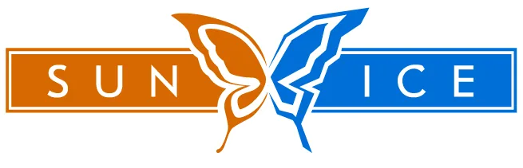

Завантаження...

Тепловий насос повітря-вода на пропані R290. Моноблок: увесь холодильний контур зібраний у вуличному блоці, в дім заходять звичайні водяні труби.
→ Плюс: на об'єкті не треба паяти й вакуумувати фреонову трасу, усі з'єднання водяні.
→ Мінус: водяну трасу між будинком і вуличним блоком треба захистити від замерзання (гліколь або автозлив), бо світло може зникнути в мороз.
Гріє воду до 75 °C і працює до −25 °C на вулиці. Тож тягне не лише теплу підлогу, а й радіатори.
| Модель | Потужність* | Струм | Шум на 1 м |
|---|---|---|---|
| FDCM60 | 5,5 кВт | 13 А (1 фаза) | 41 дБ |
| FDCM71 | 8 кВт | 16 А (1 фаза) | 49 дБ |
| FDCM100 | 10,2 кВт | 21 А / 11 А | 50 дБ |
| FDCM140 | 12,5 кВт | 28 А / 11 А | 51 дБ |
*при +7 °C на вулиці та воді 45/40 °C.
VNX — одна фаза, VSX — три фази (VSX є тільки для FDCM100 і FDCM140). Якщо є три фази, беріть VSX: струм у 2–2,5 раза менший.
| Модель | Об'єм | Змійовик |
|---|---|---|
| PT300 | 279 л | 9,4 л |
| PT300-V2 | 285 л | 16 л |
| PT500 | 476 л | 13 л |
PT300-V2 — правильний вибір під тепловий насос. У PT300 слабенький змійовик, а PT500 дає багато води при скромному змійовику. ТЕН у баки не входить, його можна докупити окремо (ME1030M, 3 кВт).
У HMM100, HBM140 і HBM140H пульт уже вбудований, окремо купувати не треба. За функціями він такий самий, як RC-HY40-W.
Окремий пульт потрібен тільки для «збірки» без внутрішнього блока:
Інтернет через myUplink є в усіх варіантах.
Сонячні панелі, басейн, сонячні колектори, Modbus, SG Ready, другий контур і каскад потребують додаткових аксесуарів. Уточнюйте при замовленні.
Промисловий тепловий насос для гарячої води на вуглекислому газі (R744 / CO₂). Не плутайте з Hydrolution — це інша порода машини.
Головна фішка: потужність 30 кВт тримається і в +16, і в −7 °C — віддача однакова, зростає тільки споживання (6,98 → 10,73 кВт). Звичайний фреоновий насос на морозі просідає, цей — ні.
Друга фішка: воду гріє до 90 °C. Без ТЕНа, самим компресором.
→ Це машина для готелів, хостелів, спортзалів, пралень, харчових виробництв, автомийок
→ Для опалення приватного будинку — надлишок, там своя логіка підбору
| Потужність | 30 кВт (стабільно) |
| COP міжсезоння | 4,30 (повітря +16, вода 17→65 °C) |
| COP мороз | 2,80 (повітря −7, вода 5→90 °C) |
| Діапазон вулиці | −25…+43 °C |
| Вода на виході | 60…90 °C |
| Живлення | тільки 3 фази 380–415 В |
| Струм | 21 А макс, пусковий усього 5 А |
| Шум | 58 дБ тиск / 70 дБ потужність |
| Габарити | 1690×1350×755 мм |
| Вага | 375 кг (385 у роботі) |
| Холодоагент | CO₂, 8,5 кг, GWP = 1 |
Пусковий струм 5 А при номіналі 21 А — це інвертор із плавним пуском. Для генератора чи слабкої мережі це дуже добра новина.
Q-ton не гріє бак по колу, як звичайний бойлер. Він працює наскрізь: холодна вода зайшла → за один прохід → 90 °C вийшла в бак.
| Режим | Л/хв | Л/год |
|---|---|---|
| Міжсезоння, 17→65 °C | 8,97 | ≈ 538 |
| Мороз, 5→90 °C | 5,06 | ≈ 304 |
Наслідок для проєкту: обов'язковий стратифікаційний бак-накопичувач. Машина набирає його повільно і рівно протягом доби, а пікове розбирання (ранок у готелі, вечір у спортзалі) покриває бак, а не насос.
Машина вміє обидва — можна і наповнювати бак з нуля, і підтягувати температуру в контурі рециркуляції.
Що робити: аналіз води до закупівлі обладнання (не після), жорстка вода → пом'якшувач обов'язково (не опція), механічний фільтр на вході, регулярне обслуговування водопідготовки — закласти в кошторис.
Тиск на вході: максимум 500 кПа (5 бар). Якщо в мережі більше — редуктор.
| Автомат (MCCB) | 30 А |
| ПЗВ | 30 А / 30 мА / 0,1 с |
| Кабель | 8 мм² × 4 (траса до 70 м) |
| Заземлення | болт M6 |
| Кабель пульта | 0,3 мм² × 2, екранований MVVS |
Три фази — обов'язково, однофазної версії немає, альтернативи немає.
Про кабель пульта: екран не для краси, прокладати окремо від силових ліній — інакше будуть плаваючі помилки зв'язку.
Профіль водорозбору XXL (найбільший із стандартних).
| Показник | Помірний | Теплий | Холодний |
|---|---|---|---|
| Клас опалення | A+ | — | — |
| Клас ГВП | A | — | — |
| Теплова потужність | 27 кВт | 30 кВт | 19 кВт |
| Сезонна ефективність | 146% | 174% | 127% |
| Річне спож. (опалення) | 14 822 кВт·год | 9 199 | 15 499 |
| Річне спож. (ГВП) | 1 909 кВт·год | 1 683 | 3 467 |
Одеса — це «помірний клімат». Орієнтуйтесь на середню колонку: 146% сезонної ефективності.
Зареєструйтесь, щоб побачити ціни та скористатись усіма функціями застосунку — це займе хвилину, а доступ надається одразу після заповнення заявки.